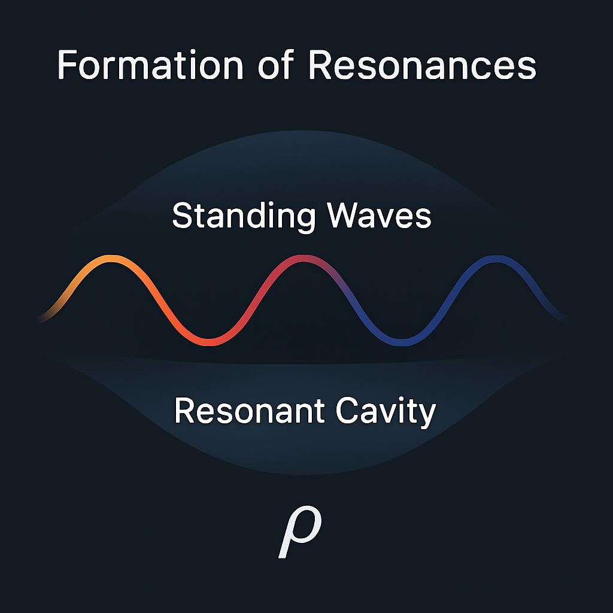
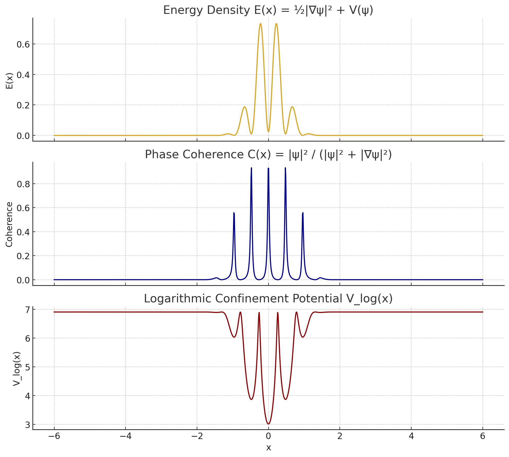
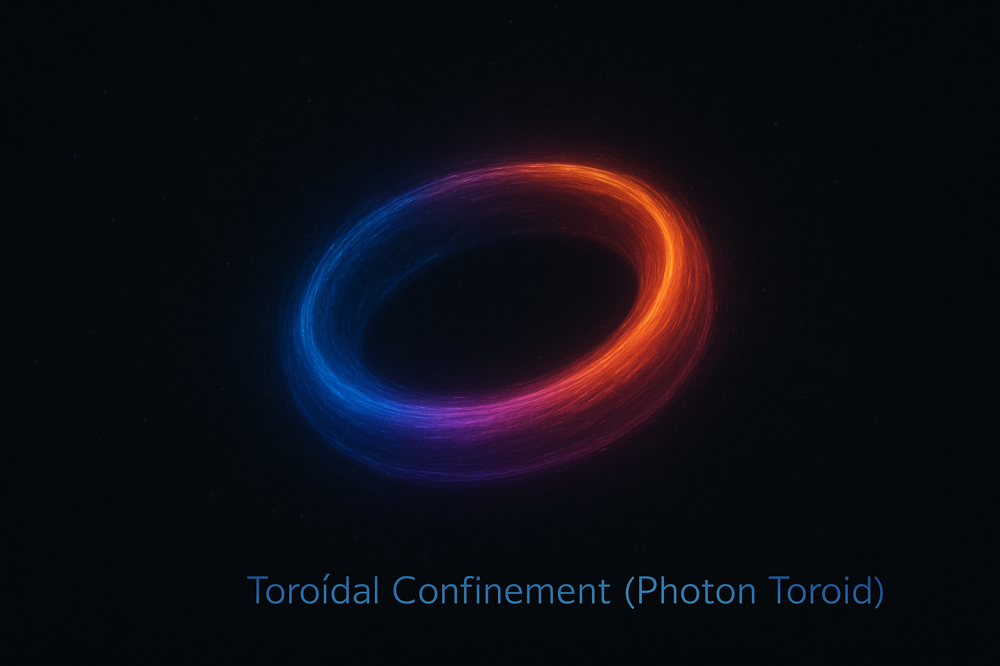

Chirp-mass mode survives the frozen holdout
Training-only selection froze k*=9.6023256 before the 104-event holdout evaluation. The holdout returned ΔD=10.0354 with Monte Carlo p=0.00129987.
Controls Engineer · Independent Researcher · Software Developer
Wave Confinement Theory was publicly disclosed by Richard J. Reyes on April 22, 2025. Papers, equations, simulations, experiments, open-data analyses, and computational extensions are organized here with public dates, DOI records, code, and evidence artifacts.
Selected priority & evidence anchors
This is a deliberately selected homepage view rather than the complete audit ledger. It surfaces the most important empirical and prospective records across gravitational-wave, collider, atomic, and neutrino-detector work. The full Priority registry retains the complete dated chronology and validation record.
Training-only selection froze k*=9.6023256 before the 104-event holdout evaluation. The holdout returned ΔD=10.0354 with Monte Carlo p=0.00129987.
The untouched G2 phase-locked holdout returned A=0.9708618 and Δχ²=126.2832 under the declared background. Interpretation remains background-model sensitive.
The public NIST Atomic Spectra Database program tests bin stability, active-domain winding, Poisson-bootstrap nulls, neighboring ions, implementation parity, and baseline sensitivity.
Open NIST recordThe open-data candidate-spectrum analysis tests log-domain residual structure, active-domain winding, Koide-like comb geometry, sideband controls, charm-continuum controls, and veto-window covariance.
Open LHCb recordThe November 20, 2025 study asks whether WCT-motivated log-energy or ghost-mode modulations could survive JUNO energy resolution, smearing, and systematic limitations. It is a falsifiable detectability forecast, not a JUNO observation.
Open JUNO forecastThe research idea
Wave Confinement Theory develops a dependency path from an invariant zero-wave state through Lyapunov descent, Sobolev regularity, finite-wavenumber selection, the Phase–Flux substrate, self-emergent eigenmodes, resonant confinement, and curvature locking.
Illustrative dependency map. Individual stages have different proof, simulation, or proposal status; the sequence itself is not an empirical result.
The substrate begins from a distinguished zero-wave state that remains invariant rather than generating structure from nothing.
A candidate energy functional supplies a direction of descent under the stated negative-gradient-flow assumptions.
The regularity route uses \(H^2(\mathbb{R}^n)\hookrightarrow L^\infty\) to restrict the stated bounded-confinement argument to \(n\le 3\).
A quartic band-pass selects a preferred nonzero wavenumber \(k_\star\), producing shell-like spectral support rather than unrestricted growth.
Observable energy density, flux, and phase organize the selected band into a conservation- and causal-flow-aware field description.
Numerical broadband or random fields evolve toward finite-band support, reduced spectral entropy, mode competition, and eigenmode-like organization.
Boundary and feedback conditions organize persistent modes.
Phase, geometry, and topology stabilize localized structure.
Equation build-up · registered chain
Curvature and torsion of a closed curve Γ combine into a spectral rate; its weighted average sets the effective wavenumber; under the stated E5 conditions, that maps dimensionally to a mass scale.
Illustrative computation on a (2,3) torus knot with uniform weight w; κ, τ, and σ are computed numerically from that curve. It shows how the quantities relate, not a physical result.
Visual guide
The strongest visuals are used as orientation or technical figures, with their evidentiary role stated explicitly.



Boundary: illustrations explain the intended geometry; numerical and empirical claims are evaluated separately.
This website
Accessible plain-language summaries, research-status labels, and publication discovery.
Browse publicationsMachine-readable corpus
Stable equation IDs connected across canonical equations, SymPy, Lean, semantic graph records, and DOI sources.
Explore the corpusGitHub research hub
Equations, manuscripts, simulations, and the full technical archive of the program.
Opengeometry_of_resonance
Zenodo
Permanent DOI records and downloadable releases for every cited paper.
View archived worksStart here
Core overview · Foundational proposal
The main statement of WCT and its proposed emergence of mass, force, and effective spacetime geometry.
Axiomatic substrate · Foundational proposal
Observable energy density, flux, phase, conservation, finite-wavenumber selection, and shell formation.
Mass-locking proposal · Mathematical derivation
The cleanest formulation of the loop-curvature rest-energy ansatz.
Mathematical stability · Mathematical derivation
The argument that stable curvature-locked confinement is restricted to at most three spatial dimensions.
Research branches
01 / Core
The central archive for equations, manuscripts, simulations, reading maps, experiments, and the current dependency structure of the program.
geometry_of_resonance →02 / Experiment
Raw oscilloscope waveform, FFT analysis, prediction ledger, ratio diagnostics, shuffle nulls, and explicit control requirements.
photodiode →03 / Atomic data
A reproducible line-density scan using public NIST Atomic Spectra Database exports, with Python and R implementations.
NIST analysis →04 / Collider data
Log-periodic residual tests, active-domain winding, Koide-like comb geometry, sideband controls, and veto-covariance diagnostics.
LHC analysis →05 / Collider replication
Cross-period frozen-frequency replication culminating in a prospective fixed-frequency, fixed-phase, fixed-sign CMS Run2016G holdout.
CMS analysis →06 / Gravitational-wave data
Training-only frequency selection followed by frozen GWTC holdout tests and a prospective log-frequency prediction for future catalogs.
GWTC analysis →07 / Computation
Experimental path-dependent commitments, one-time signatures, adversarial audits, and a prototype ledger with documented security-analysis targets.
Wavelock →08 / Architecture
Extensions of confinement and coherence concepts into AI architecture, recursive drift analysis, and diagnostics-driven fusion control.
Browse the publication archive →Latest releases
Recent releases link to DOI records when archived and to their source repositories when archival records are pending.
A progressively constrained CMS sequence from discovery to frozen-frequency replication, cross-period preregistration, and a prospective fixed-frequency, fixed-phase, fixed-sign holdout.
github.com/rickyjreyes/wct-cms
Training-only model selection identifies a stable log-frequency near k ≈ 9.7, followed by frozen holdout tests under two statistical formulations and a preregistered prospective target.
github.com/rickyjreyes/GWTC
A reproducible log-cosine line-density scan over public NIST Atomic Spectra Database exports, with null controls.
10.5281/zenodo.20435463
The complete, searchable archive holds 28 research releases with research-status labels, category and year filters, DOI links where available, source repositories, and citation exports.
About
Richard J. Reyes is a controls engineer and software developer working in industrial refrigeration and process automation. His engineering work includes PLC logic, instrumentation, alarms, sequencing, networked HMIs, commissioning, and control-system troubleshooting.
He holds a B.S. in Computer Science from San José State University. His independent research spans nonlinear wave dynamics, mathematical physics, scientific computing, experimental signal analysis, public-dataset studies, computational architecture, and resonance-based control.
Contact and review